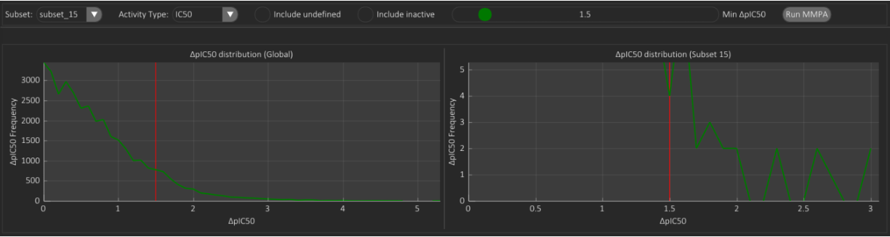
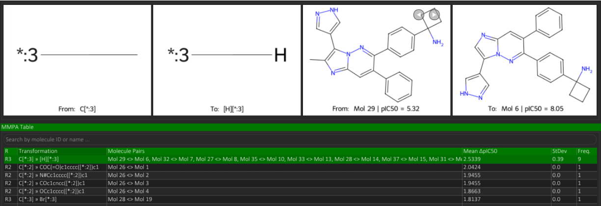

Matched Molecular Pairs Analysis (MMPA)
The MMPA tab in SARgate is composed of two interactive panels: MMPA Table and MMPA Network.
MMPA Table
The Matched Molecular Pairs Analysis (MMPA) identifies molecule pairs within a selected subset that differ exclusively by a single variable group at the same attachment position on the reference core. Each row in the MMPA table corresponds to one unique transformation, defined as the substitution of fragment X with fragment Y at a specific R-position.
The column Freq. reports the total number of molecule pairs in the selected subset that exhibit the same fragmental transformation (X » Y) at the same R-position. The column Mean ΔActivity reports the average activity difference between all molecule pairs involved in that transformation, evaluated for the activity type selected by the user (e.g., IC50, EC50). If the selected activity is IC50-like, potency relationships are internally analysed in logarithmic space when valid numeric values are available.
A global filter, controlled by the slider Min ΔActivity, retains only transformations where the mean activity difference meets or exceeds the selected threshold. Upon selecting a row, the interface renders four molecular images: the two left images represent the exchanged fragments (variable regions); the two right images display the molecular pair(s) supporting that transformation. Navigation buttons ◀ and ▶ allow browsing all available molecular pairs for a transformation when Freq. > 1.
Additionally, a clarification on R-group interpretation: when a molecule contains a ring fragment in a region that corresponds to two independent substituents in other subset molecules, the ring is interpreted as the variable connector of that region. Consequently, its two heavy-atom-defined attachment points are assigned as R2 and R3, not as classical monovalent substituents, ensuring positional consistency during pair matching.
- The checkbox Include undefined extends matching to activity annotations using inequality operators. Transformations involving at least one molecule with undefined activity are colored in yellow.
- The checkbox Include inactive includes molecules lacking the selected activity label, assigning a dummy value of 0 for comparison purposes. Transformations involving at least one inactive molecule are colored in red.
Example Analysis
The following example illustrate an MMPA case study conducted on Subset 15 using IC50 as the selected activity type and Min ΔpIC50 = 1.8.

The transformation frequency distribution plot on the right panel (subset-specific) is restricted to ΔpIC50 values between 1.8 and 3, where the most significant peaks are observed. For example, within Subset 15:
- 3 transformations fall within ΔpIC50 = 1.8-1.9,
- 2 transformations fall within ΔpIC50 = 2.0-2.1,
- 0 transformations are observed at ΔpIC50 = 2.4-2.5, and
- 2 transformations are observed at ΔpIC50 = 3.0-3.1.

The second image displays the selected transformation row: R3: CH3 → H, supported by 9 molecule pairs. Although the exchanged fragment is identical in all 9 cases, individual molecule pairs may present different absolute IC50 values, which explains why the mean ΔpIC50 (2.5339) is lower than the highest individual ΔpIC50 values observed in the distribution plot (equal to 3).
MMPA Network
The MMPA Network panel visualises the connected components generated by the transformations identified in the MMPA Table. Each node corresponds to one molecule, and each edge represents a valid matched-pair relationship between two molecules that differ by a single local modification. Molecules connected through chains of transformations are displayed together as structural families.
The network layout can be interactively tuned to emphasise three complementary views:
- Circle, which distributes the molecules on a circular arrangement.
- Network, which emphasises graph connectivity and local neighbourhood structure.
- Activity, which progressively aligns nodes according to their biological activity values.
Additional sliders control node size, rendering detail, and edge length, allowing the user to balance structural readability and network compactness even for larger connected components.
When a molecule is hovered, SARgate swaps its depiction to a highlighted version where the common scaffold region is shown in blue and the variable R-group regions are shown in red. The hovered node and its directly connected neighbours are also emphasised by an outer ring, while the node image itself displays the molecule identifier, optional name, and activity value. This supports rapid inspection of how local structural edits propagate through the MMPA graph.
The internode connections also follow the currently active discrete colormap of the program, so the appearance of the network remains visually consistent with the rest of the application and updates immediately when the user changes the global discrete palette.